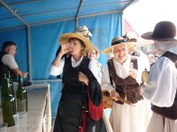

Campesino
 De: La Frikipedia, la enciclopedia extremadamente seria.
De: La Frikipedia, la enciclopedia extremadamente seria.
| De la serie animales y otros bichejos:
|
|
|
| Aldeano pensando como invadir las tierras vecinas
|
|
| Nombre común:
|
Currante del campo
|
| Nombre científico:
|
Esclavus paganus
|
| Especie:
|
Mundial Humana
|
| Subespecie:
|
Aria
|
| Alimentación:
|
Aire fresco de las montañas nepalíes
|
| Apariencia:
|
Altos y fornidos
|
| Hábitat natural:
|
Naturaleza salvaje
|
| Localización:
|
Campo sembrado
|
| Número aproximado de ejemplares:
|
Todos los que no viven en la Ciudad
|
| Fecha de extinción:
|
Nunca
|
| Pokemonización:
|
Gitano
|
Los campesinos son seres mitológicos que se cree que intentaban crear una sociedad comunista. Probablemente estos seres nunca han existido, ni en los albores de la Humanidad, cuando Gondwana era el único país.
No obstante indicios arqueológicos hacen surgir valientes hipótesis acerca de su estricta realidad. La mayor prueba viene por el descubrimiento de casas, caminos, muros, torres y otras cosas descubiertas por los habitantes de las ciudades al huir de ellas en vacaciones y fin de semana. Hasta ahora se pensaba que estos terrenos habían sido fundados por extraterrestres, como las Pirámides de Egipto, pero esta teoría hace desechar semejante suposición por la teoría del "Buen Cani" que durante milenios habitó el campo y lo trabajó para sacar de él su sustento, y que la Revolución Industrial destruyó su hábitat haciéndole huir a la ciudad, viéndose obligado a convivir con burgueses y burdos proletarios, se transformaron en canis y jesis, que viven de los demás para demostrar su orgullo y que son superiores al resto de la humanidad.
Tipos de campesinos
Campesinos de caza viendo si pueden mover los extremos de la finca del vecino
- El campesino callado: con boina, filósofo natural y épico, si le cortas un brazo no dirá nada, si le cortas los dos sólo le saldrá una tic en los labios, por encima de su umbral de dolor solo está Dios.
- El campesino tonto: eso es lo que él quiere que tú creas para robarte la cartera, el coche y la novia buenorra.
- El campesino conservador: vota al PP y ve Intereconomía, abomina de los rojos, fachas y si ve al Rey se saca una foto con él. Eso sí, cuando se va su majestá se pone a criticarle.
- El campesino rojo: anarquista, vota al PP y ve Telahinco, no va a misa pero va de putas ya que le leva en su coche el campesino conservador (que después de misa va de putas).
- El campesino luchador: como se acabó la Edad Media y ya no tiene ningún conde con el cual ir a la guerra pues se mete en todo tipo de líos y saraos, se pasa la mitad de la semana en los juzgados como denunciante, testigo, denunciado, testigo falso, haciendo pleitos. A veces sale de noche a realizar acciones de guerrilla campesina, cambiando las piedras que señalan los extremos de las fincas para meter cizaña entre sus vecinos o con sus vecinos y quedarse con más tierra, vive obsesionado con la tierra y mata por ella. No va a putas porque se folla a las mujeres de sus vecinos.
Moda campesina
La moda campesina es práctica y chuloide.
- Hombres: pantalón siempre largo y camisa, tanto en invierno como en verano para demostrar que es un macho auténtico, en la azotea con boina o sombrero de paja (que es más efectivo que las gorras porque hacen sombra por todas partes y la paja deja respirar al cuero cabelludo).
- Mujeres: camisa y falda, pa demostrar que no son unas fáciles aunque luego después no hacen caso al cura y tienen una moral relajada.
- Armas: todo campesino siempre va armado con alguna herramienta (hoces, sachos, sable láser, picos, tijeras) para enfrentarse a todo tipo de animales salvajes (jabalíes, anacondas, inspectores de Hacienda, ornitorrincos, elefantes, Tiranosaurus Rex).
Tradiciones campesinas
 Típico botellón campesino donde es todo gratis
- Fiesta patronal: se organiza un gran botellón gratis para los locales y visitantes, encima consiguen subvenciones para ello. Si vas y no conoces a nadie no hay problema, que siempre está el bufón del lugar presto a solucionar todas los problemas sociales.
- Fiesta gastronómica: macrobotellón con miles de alcoholes y comida para estar todo el día, la noche y la semana entera de farra sin que decaiga el ritmo, también gratis.
- Mover marco o extremos: costumbre tradicional consistente en mover las piedras indicadoras de los límites de las propiedades inmuebles con el fin de conseguir más metros de tierra, se suele realizar de noche. A veces acaban en asesinatos o intento de homicidio con hoces y sachos.
- Reconstruir la casa gratis: haces una casa rural con unas subvenciones.
- Caciquismo: te haces amigo del alcalde para conseguir más subvenciones pa las fiestas, te colocan al hijo en alguna oficina estatal, que limpien los caminos. Los de la ciudad piensan que esto es malo, pero en realidad es buenísimo dado que gracias a ello consigues un montón de cosas y encima no pagas.
- Turismo electoral: gracias a las elecciones se pueden ganar varios encuentros gastronómicos gratis y viajes a lugares de interés, lo único malo es aguantar un mitin de dos horas de unos cuantos trajeados del PPSOE.
- Paz sexual: se consigue a base de sorteos anuales de parejas humanas, para que todo el mundo tenga con quién follar o follarse a los guapos del pueblo una año en la vida, gracias a ello viven en paz y armonía con la naturaleza e incluso los feos mojan.
Autor(es):
- Generibot
- Fdecus
- Lautaro 97
Frikipedia 2005-2016, Licencia
GFDL 1.2 - Extraído por FrikiLeaks